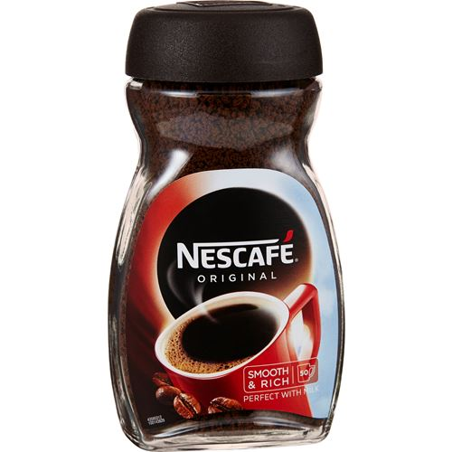

Kaffe
Olja är världens mest handlade råvara, men kaffet är inte långt efter. Faktum är att kaffet hamnar på en andraplats av världens mest sålda råvaror. Vi svenskar är kända för vårt ständiga kaffedrickande. Men faktum är att vi "bara" hamnar på en andraplats över de mest kaffekonsumerande länderna. Vårt grannland Finland kniper förstaplatsen, följt av Sverige, Norge och Danmark, vilket därmed innebär att kaffekonsumtionen i norden är bland den största i världen.
Olika sorters kaffe:
- Caffè latte
- Cappuccino
- Caffè americano
- Caffè mocha
- Cappuccino
- Caffè con panna
- Caffè macchiato
- Caffè freddo
- Espresso
Vem producerar mest kaffe i världen?
Brasilien är världsledande inom kaffeproduktion, en position som landet har haft sedan 1840. Med mer än 10 000 mil kaffeplantager producerar landet cirka 30 % av den totala kaffeproduktionen i världen. Det finns mer än 60 olika kaffesorter, så det finns något för alla. Den populäraste kaffesorten heter Arabica och går under det botaniska namnet "Äkta kaffe". Den här kaffesorten är den mildaste och utgör 70-75 procent av världens kaffeproduktion, så sannolikheten är stor att du redan har smakat den här typen av kaffe.

Kaffe var det första livsmedlet som frystorkades
För att hantera överskott av kaffe i Brasilien frystorkade Nestle kaffe 1938, vilket banade väg för konservering av andra lättfördärvliga typer av livsmedel som kött, mjölkprodukter och grönsaker med bibehållen näring och smak. Nestle introducerade också Nescafe snabbkaffe i Schweiz.

Visste du att?
- Kaffebönor kommer från frukterna av kaffeplantan som är ett vintergrönt träd som växer i tropiska och subtropiska regioner. Träden kan bli upp till 12 meter höga och röda stenfrukter växer på grenarna. Inuti var och en av dessa stenfrukter finns vanligtvis två frön, vilket vi kallar kaffebönor. Med andra ord kan vi säga att kaffe är en frukt, även om det just är ett frö i en frukt.
- Forskare håller i allmänhet med om att ett måttligt kaffeintag kan ha en positiv effekt på hälsan. Ett måttligt intag beräknas vara cirka 500-600 mg koffein per dag, vilket motsvarar cirka 6-7 koppar.Inom dessa gränser har det visats att kaffe kan öka koncentrationen och öka den fysiska uthålligheten. Å andra sidan kan kaffe orsaka högt kolesterol om det inte filtreras.
- Med tanke på att kaffe tillhör en av världens mest sålda råvaror bör det också vara en av världens mest konsumerade. Och så är även fallet. Näst efter vatten är kaffe den dryck som dricks mest i hela världen. Så mycket som tre miljarder tre miljarder koppar kaffe konsumeras varje dag.